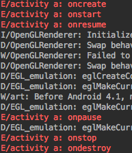
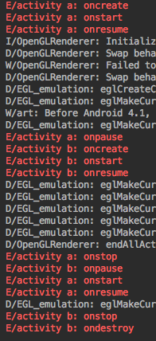
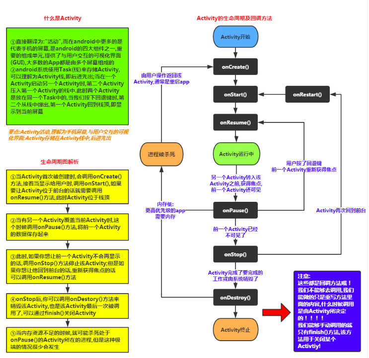

Activity
Activity的生命周期
这是一个Activity的创建以及销毁的过程：

在上面的图中可以很清晰地看到其生命周期为onCreate() –> onStart() –>onResume() –> onPause() –> onStop() –> onDestroy()
一个Activity是上述的生命周期，但是也很难看出来具体的每个函数合适调用，所以我们写两个Activity来看一看具体的生命周期是如何：

刚才的操作是创建Activity_a，然后在Activity_a中按下按钮进入Activity_b,看到它的生命周期是这样的 a.onCreate() –> a.onStart() –> a.onResume() 此时按下按钮转向Activity_b ：
–> a.onPause() –> b.onCrate() –> b.onStart() –> b.onResume –> a.onStop()
此时再按返回键则继续的生命周期：
b.onPause() –> a.onStart() –> a.onResume() –> b.onStop() –> b.onDestroy()
由此可以有以下分析：
onCreate() 函数只在Activity第一次创建的时候调用，onPause() 在另一个Activity变成焦点但是本身还可见时调用，onStop() 在自身不可见时调用，onDestory()在自身被销毁时调用，onStart()在Activity变成焦点时调用，onResume()调用后Activity变得可见。
为了描述的更加清楚，使用一张图片来展示：
